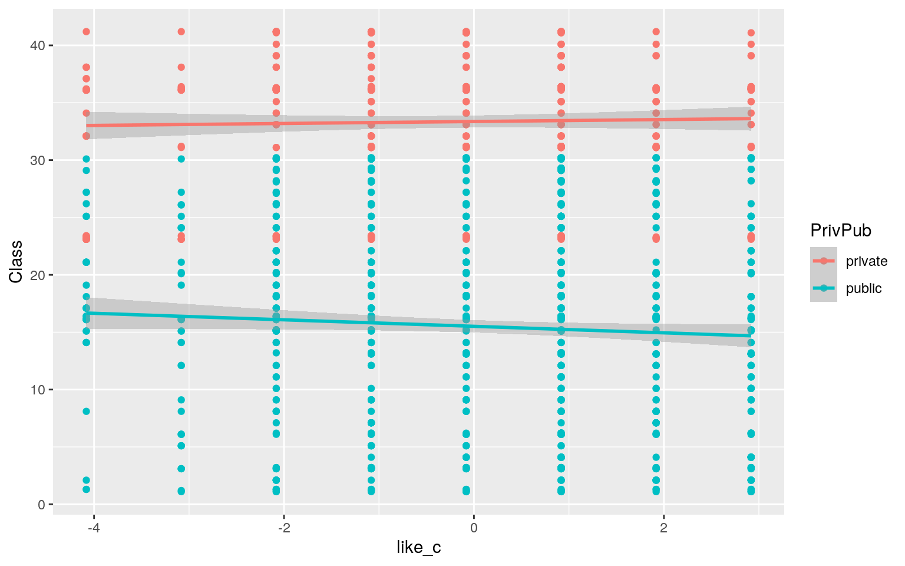

Analysis of Attitude Towards Science Survey Project by: Ericka Salas (efs554)
Growing up I loved science and I continue to do so. Though, how do other people feel about science based on different factors? The dataset that I am analyzing is a school science survey dataset that is based on the attitudes to science based on sex, private or public school, and class in two different Australian states. The numeric variables are the school code, class, and the likliness of the subject of science. The categorical variables are sex, states, and whether the student is in a private or public school. There are a total of 1385 observations that are mainly measuring the attitude towards science based on different factors.
science <- read.csv("science.csv") %>% na.omit()
head(science)## X State PrivPub school class sex like Class
## 1 1 ACT public 1 1 f 8 1.1
## 2 2 ACT public 1 1 f 6 1.1
## 3 3 ACT public 1 1 f 5 1.1
## 4 4 ACT public 1 1 f 2 1.1
## 5 6 ACT public 1 1 f 5 1.1
## 6 7 ACT public 1 1 f 6 1.1library(rstatix)
group <- science$State
DVs <- science %>% select(like,class)
#Test multivariate normality for each group (null: assumption met)
sapply(split(DVs,group), mshapiro_test)## ACT NSW
## statistic 0.9349495 0.9696399
## p.value 1.113207e-23 0.234296#Box's M test (null: homogeneity of vcov mats assumption met)
box_m(DVs, group)## # A tibble: 1 x 4
## statistic p.value parameter method
## <dbl> <dbl> <dbl> <chr>
## 1 26.5 0.00000742 3 Box's M-test for Homogeneity of
Covariance Matrices#Optionally View covariance matrices for each group
lapply(split(DVs,group), cov)## $ACT
## like class
## like 3.43714789 0.04077556
## class 0.04077556 0.69198615
##
## $NSW
## like class
## like 2.1751701 -0.2363946
## class -0.2363946 0.2551020#Performing the MANOVA Test
man <- manova(cbind(like,Class)~State, data = science)
summary(man)## Df Pillai approx F num Df den Df Pr(>F)
## State 1 0.10968 85.004 2 1380 < 2.2e-16 ***
## Residuals 1381
## ---
## Signif. codes: 0 '***' 0.001 '**' 0.01 '*' 0.05 '.' 0.1
' ' 1#Since it is significant, this gets the univarate ANOVAs
summary.aov(man)## Response like :
## Df Sum Sq Mean Sq F value Pr(>F)
## State 1 7.6 7.6409 2.2518 0.1337
## Residuals 1381 4686.1 3.3933
##
## Response Class :
## Df Sum Sq Mean Sq F value Pr(>F)
## State 1 19620 19620.1 170.04 < 2.2e-16 ***
## Residuals 1381 159352 115.4
## ---
## Signif. codes: 0 '***' 0.001 '**' 0.01 '*' 0.05 '.' 0.1
' ' 1science %>% group_by(State) %>% summarize(mean(like), mean(Class))## # A tibble: 2 x 3
## State `mean(like)` `mean(Class)`
## <fct> <dbl> <dbl>
## 1 ACT 5.10 20.6
## 2 NSW 4.69 41.0pairwise.t.test(science$like, science$State, p.adj = "none")##
## Pairwise comparisons using t tests with pooled SD
##
## data: science$like and science$State
##
## ACT
## NSW 0.13
##
## P value adjustment method: nonepairwise.t.test(science$Class,science$State, p.adj="none")##
## Pairwise comparisons using t tests with pooled SD
##
## data: science$Class and science$State
##
## ACT
## NSW <2e-16
##
## P value adjustment method: nonetypeone = 1 - .95^7
typeone## [1] 0.3016627Since one Manova, two Anovas, and a total of 4 t-tests were done. This all adds up to a total of 7 tests done. The type one error rate is 0.3016627. The bonferroni coefficient and adjusted significance level is 0.007.
Analysis/Write-Up A one-way MANOVA was conducted to determine the effect of the Australian State (ACT, NSW) on two dependent variables (Likeliness of Science, Class).
There were significant differences found among the two states for at least one of the dependent variables. Pillai trace = 0.1097, F(1382) = 85.147, p < 0.0001.
Univariate ANOVAs for each dependent variable were conducted as follow-up tests to the MANOVA, using the Bonferroni method for controlling Type I error rates for multiple comparisons. The univariate ANOVAs for likeliness were not significant (P = 0.1335) and were significant for Class (P < 0.0001).
Post hoc analysis was performed conducting pairwise comparisons to determine which States differed in likeness of science and Class. Both States were found to differ significantly from each other in terms of science like and class after adjusting for multiple comparisons (bonferroni).
Pillai trace = 0.1097, p < 0.0001. α = .05/7 = .007
Create a plot visualizing the null distribution and the test statistic (3).
#Performing Randomization Test on T-stat
t.test(data = science,like~PrivPub) ##
## Welch Two Sample t-test
##
## data: like by PrivPub
## t = -3.7254, df = 879.13, p-value = 0.0002074
## alternative hypothesis: true difference in means is not
equal to 0
## 95 percent confidence interval:
## -0.6018079 -0.1865014
## sample estimates:
## mean in group private mean in group public
## 4.816372 5.210526#Running the Randomization Test
science %>% group_by(PrivPub) %>% summarize(mean=mean(like)) %>% summarize(diff(mean))## # A tibble: 1 x 1
## `diff(mean)`
## <dbl>
## 1 0.394rand_dist<-vector()
for(i in 1:5000){
new <- data.frame(like = sample(science$like), PrivPub = science$PrivPub)
rand_dist[i]<-mean(new[new$PrivPub=="public",]$time)-
mean(new[new$PrivPub=="private",]$time)
}
#hist(rand_dist,main="",ylab="")Null Hypothesis: Mean liklihood of science is the same for both public and private school students. Alternative Hypothesis: Mean liklihood of science is different for both public and private school students.
There is a true difference in means of students who like science in public school and private schools. Therefore, we reject the null hypothesis. (t = -3.7237, df = 877.64, p = 0.0002089)
library("lmtest")
#Mean centering any numeric variables
science$like_c <- science$like - mean(science$like)
#building a linear regression model with interation
fit<-lm(Class ~ like_c * PrivPub, data = science)
summary(fit)##
## Call:
## lm(formula = Class ~ like_c * PrivPub, data = science)
##
## Residuals:
## Min 1Q Median 3Q Max
## -15.3708 -6.1515 0.6646 4.9969 15.5162
##
## Coefficients:
## Estimate Std. Error t value Pr(>|t|)
## (Intercept) 33.36447 0.36548 91.290 <2e-16 ***
## like_c 0.08539 0.19514 0.438 0.662
## PrivPubpublic -17.85229 0.44434 -40.177 <2e-16 ***
## like_c:PrivPubpublic -0.36925 0.23918 -1.544 0.123
## ---
## Signif. codes: 0 '***' 0.001 '**' 0.01 '*' 0.05 '.' 0.1
' ' 1
##
## Residual standard error: 7.692 on 1379 degrees of
freedom
## Multiple R-squared: 0.5441, Adjusted R-squared: 0.5431
## F-statistic: 548.7 on 3 and 1379 DF, p-value: < 2.2e-16Intercept: The mean predicted likliness of science for non private school students is 33.36446. For students that are in public school, a student who likes science are on average 17.84454 less than a student in private school. The interaction of students on average who like science in a public school is 0.369 less than a student in a private school.
science %>% ggplot(aes(like_c, Class, color = PrivPub)) + geom_point() + geom_smooth(method = "lm") 
#make histogram of residuals
resids<-lm(like_c~Class, data=science)$residuals
ggplot()+geom_histogram(aes(resids),bins=10)#plot residuals vs. fitted values
fitted<-lm(like_c~Class, data=science)$fitted.values
ggplot()+geom_point(aes(fitted,resids))resids<-fit$residuals
fitvals<-fit$fitted.values
ggplot()+geom_point(aes(fitvals,resids))+geom_hline(yintercept=0, color='red')Based on the graphs of residuals and histograms, the assumptions of linearity, normality, and homoskedasticity appear to be violated. However, the normality assumption appears the least violated due to the histogram slighlty looking normal distribution.
library("sandwich")
coeftest(fit, vcov = vcovHC(fit))[,1:2]## Estimate Std. Error
## (Intercept) 33.36447026 0.2676107
## like_c 0.08538685 0.1526248
## PrivPubpublic -17.85228513 0.3861879
## like_c:PrivPubpublic -0.36925227 0.2131576(sum((science$like-mean(science$like))^2)-sum(fit$residuals^2))/sum((science$like-mean(science$like))^2)## [1] -16.38192The proportion of variation that the model explains is -16.3827.
Rerun same regression model (with the interaction), but this time compute bootstrapped standard errors (either by resampling observations or residuals). Discuss any changes you observe in SEs and p-values using these SEs compared to the original SEs and the robust SEs)
fit<-lm(like~Class + PrivPub, data=science) #fit model
resids<-fit$residuals #save residuals
fitted<-fit$fitted.values #save yhats
resid_resamp<-replicate(5000,{
new_resids<-sample(resids,replace=TRUE) #resample resids w/ replacement
science$new_y<-fitted+new_resids #add new resids to yhats to get new "data"
fit<-lm(new_y~Class + PrivPub,data=science) #refit model
coef(fit) #save coefficient estimates (b0, b1, etc)
})
resid_resamp%>%t%>%as.data.frame%>%summarize_all(sd)## (Intercept) Class PrivPubpublic
## 1 0.2303765 0.006431209 0.1553071There are a few changes to the SEs before and after the adjustment. The original SEs for class and private/public variable were higher than the bootstrapped SEs. For example, at first the PrivPub SE was 0.3857914 and then was 0.1566013.
Part 5: Fit a logistic regression model predicting a binary variable (if you don't have one, make/get one) from at least two explanatory variables (interaction not necessary).
#create a binary categorical variable
science1 <- science %>% na.omit() %>% mutate(y=ifelse(sex=="m",1,0))
fit1 <- glm(y~like_c,data=science1, family="binomial")
coeftest(fit1)##
## z test of coefficients:
##
## Estimate Std. Error z value Pr(>|z|)
## (Intercept) 0.0014326 0.0538237 0.0266 0.9788
## like_c 0.0439133 0.0292525 1.5012 0.1333exp(coef(fit1))## (Intercept) like_c
## 1.001434 1.044892Coefficients: Intercept: For students in either ACT or NSW states and regardless of sex, like = 0, private = 0, public = 0, is 1.001428
Like_c: Controlling for public or private school, for every point of likelihood, the outcome of the student being a male increases by 1.089.
probs <- predict(fit1, type = "response")
table(predict = as.numeric(probs > 0.5), truth = science1$y) %>% addmargins## truth
## predict 0 1 Sum
## 0 377 335 712
## 1 314 357 671
## Sum 691 692 1383class_diag <- function(probs,truth){
#CONFUSION MATRIX: CALCULATE ACCURACY, TPR, TNR, PPV
if(is.character(truth)==TRUE) truth<-as.factor(truth)
if(is.numeric(truth)==FALSE & is.logical(truth)==FALSE) truth<-as.numeric(truth)-1
tab<-table(factor(probs>.5,levels=c("FALSE","TRUE")),factor(truth, levels=c(0,1)))
acc=sum(diag(tab))/sum(tab)
sens=tab[2,2]/colSums(tab)[2]
spec=tab[1,1]/colSums(tab)[1]
ppv=tab[2,2]/rowSums(tab)[2]
f1=2*(sens*ppv)/(sens+ppv)
#CALCULATE EXACT AUC
ord<-order(probs, decreasing=TRUE)
probs <- probs[ord]; truth <- truth[ord]
TPR=cumsum(truth)/max(1,sum(truth))
FPR=cumsum(!truth)/max(1,sum(!truth))
dup<-c(probs[-1]>=probs[-length(probs)], FALSE)
TPR<-c(0,TPR[!dup],1); FPR<-c(0,FPR[!dup],1)
n <- length(TPR)
auc<- sum( ((TPR[-1]+TPR[-n])/2) * (FPR[-1]-FPR[-n]) )
data.frame(acc,sens,spec,ppv,f1,auc)
}class_diag(probs, truth = science1$y)## acc sens spec ppv f1 auc
## 1 0.5307303 0.515896 0.5455861 0.5320417 0.5238445
0.5334974The accuracy of the model is 0.5307, its true positive rate is 0.515, and its true negative rate is 0.5455. The positive predictive rate is 0.5320 and the AUC of the model is 0.5335.
science1$logit<-predict(fit1,type="link")
science1%>%ggplot(aes(logit,color=sex,fill=sex))+geom_density(alpha=.4)+
theme(legend.position=c(.85,.85))+geom_vline(xintercept=0)+xlab("predictor (logit)")library(plotROC)
science1$prob <- predict(fit1, type = "response")
ROCplot <- ggplot(science1) + geom_roc(aes(d = y, m = prob), n.cuts = 0) + geom_segment(aes(x=0,xend=1, y=0, yend = 1), lty=2)
ROCplotcalc_auc(ROCplot)## PANEL group AUC
## 1 1 -1 0.5334974The area under the curve or the AUC is 0.53349.
fit3<-glm(y~class+Class+like, data=science1, family="binomial")
coeftest(fit3)##
## z test of coefficients:
##
## Estimate Std. Error z value Pr(>|z|)
## (Intercept) -0.2488047 0.2148842 -1.1579 0.246923
## class 0.2096216 0.0670087 3.1283 0.001758 **
## Class -0.0116442 0.0048172 -2.4172 0.015639 *
## like 0.0351445 0.0295547 1.1891 0.234387
## ---
## Signif. codes: 0 '***' 0.001 '**' 0.01 '*' 0.05 '.' 0.1
' ' 1exp(coef(fit3))## (Intercept) class Class like
## 0.7797322 1.2332113 0.9884234 1.0357694probs2 <- predict(fit3, type = "response")
class_diag(probs2, science1$y)## acc sens spec ppv f1 auc
## 1 0.537961 0.5202312 0.5557164 0.5397301 0.5298013
0.5583043The model is 0.538 accurate with a true positive rate of 0.5202 and a true negative rate of 0.5557. The positive predictive rate is 0.5397 and auc (area under the curve) is 0.5583.
set.seed(1234)
fraction<-0.5 #choose proportion of rows to train
train_n<-floor(fraction*nrow(science1)) #number of rows to train
iter <- 500 #number of iterations
diags<-NULL
for(i in 1:iter){
## Create training and test sets
train_index<-sample(1:nrow(science1),size=train_n)
train<-science1[train_index,]
test<-science1[-train_index,]
truth<-test$y
## Train model on training set
fit<-glm(y~(.)^2,data=train,family="binomial")
## Test model on test set, get diagnostics
probs<-predict(fit3,newdata = test,type="response")
diags<-rbind(diags,class_diag(probs,truth))
}
summarize_all(diags,mean)## acc sens spec ppv f1 auc
## 1 0.537026 0.5196131 0.5545113 0.5389891 0.5289284
0.5576631After performing the cross validation above, the classification metrics slightly changed. A few of the values increased or decreased slightly. The AUC changed very slightly. Since the metrics did not change much, we can indicate that the model is not overfitted.
library(glmnet)
y<-as.matrix(science1$y) #grab response
x<-model.matrix(y~.,data=science1)[,-1] #grab predictors
cv <- cv.glmnet(x,y,family="binomial")
lasso<-glmnet(x,y,family="binomial",lambda=cv$lambda.1se)
coef(lasso)## 12 x 1 sparse Matrix of class "dgCMatrix"
## s0
## (Intercept) -7.29711
## X .
## StateNSW .
## PrivPubpublic .
## school .
## class .
## sexm 14.59567
## like .
## Class .
## like_c .
## logit .
## prob .After performing LASSO on the model the only variable retain is the sex of the student.
set.seed(1234)
k=10
data <- science1 %>% sample_frac #put rows of dataset in random order
folds <- ntile(1:nrow(data),n=10) #create fold labels
diags<-NULL
for(i in 1:k){
train <- data[folds!=i,] #create training set (all but fold i)
test <- data[folds==i,] #create test set (just fold i)
truth <- test$y #save truth labels from fold i
fit <- glm(y~like,
data=train, family="binomial")
probs <- predict(fit, newdata=test, type="response")
diags<-rbind(diags,class_diag(probs,truth))
}
diags%>%summarize_all(mean)## acc sens spec ppv f1 auc
## 1 0.5242519 0.6148693 0.4438597 0.522069 0.5572307
0.5330275The model's out of sample AUC is very similar (0.533) to the logistic regression above (0.5583).